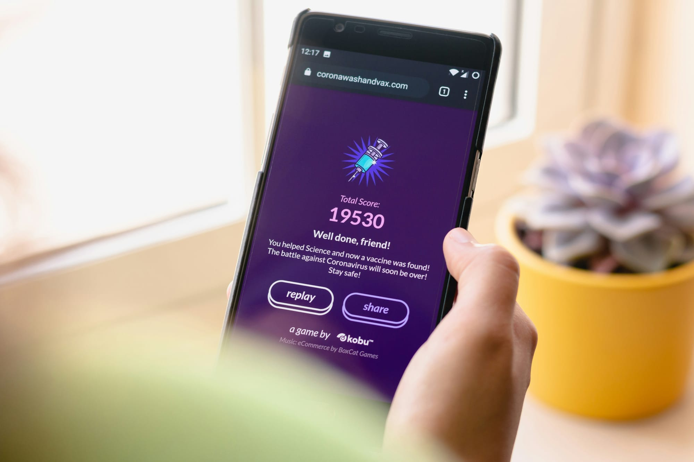

Best Cashback Apps in 2026 That Actually Pay
Best cashback apps compared in 2026 — Rakuten, Honey, Ibotta, Dosh, Fetch. Real payouts, head-to-head. Honest review of who pays the most.
Z Zar · 22 Apr 2026 — 8 min read

📚 Part of our Budget & Debt Guide
Cashback apps are one of the fastest ways to put real money back in your pocket in 2026 — on purchases you were already going to make. No lifestyle changes required.
I tested every major option and ranked the best cashback apps by what actually matters: payout rate, reliability, and ease of use. Here is the honest breakdown.
📋 Quick navigation
🏆 Our Top Picks
| Pick | Best for | Rating | |
|---|---|---|---|
| Rakuten | Online shopping at big-name retailers | ★★★★★ | See pick → |
| Ibotta | Grocery cashback | ★★★★★ | See pick → |
| Honey (PayPal) | Automatic coupon-finding at checkout | ★★★★★ | See pick → |
| Dosh | Automatic in-store cashback | ★★★★★ | See pick → |
| Capital One Shopping | Alternative to Honey, price drop alerts | ★★★★★ | See pick → |
| Fetch Rewards | Receipt scanning, fastest cashout | ★★★★★ | See pick → |
Last reviewed: May 2026
Best Cashback Apps in 2026: Quick Comparison
| App | Best For | Cashback Rate | Welcome Bonus | Payout |
|---|---|---|---|---|
| Rakuten | Online shopping | 1–15% | $30 | Quarterly (PayPal/check) |
| Ibotta | Groceries & everyday | $0.25–$5/item | $20 | Instant to PayPal/Venmo |
| Honey | Auto coupon finding | 1–10% Gold | None | Gift cards |
| Dosh | Automatic in-store | 1–5% | None | Bank/PayPal ($25 min) |
| Capital One Shopping | Coupon backup + credits | Variable Credits | None | Gift cards |
| Fetch Rewards | Receipt scanning | $0.10–$0.50/receipt | None | Gift cards |
Bottom line up front: Start with Rakuten + Ibotta. They cover online shopping and groceries, pay real cash (not just gift cards), and both have welcome bonuses worth $50 combined. Add Honey for automatic coupon codes at checkout. That stack alone generates $600–$1,800/year for most households.
How Cashback Apps Work
📘 Free Download
Get the 6-page FI Checklist PDF
A roadmap to financial independence — sent to your inbox the moment you subscribe. Plus weekly investing playbooks.
Send me the PDF →No spam. Unsubscribe anytime.
Retailers pay cashback apps a commission for referring customers. The apps share a portion of that commission with you as cashback. There is no catch — retailers pay this commission regardless. Using a cashback app simply redirects money that would otherwise stay with the app company back to you.
The key is stacking — using multiple cashback sources on the same purchase to maximize the return. More on that below.
The 6 Best Cashback Apps in 2026 (Reviewed)
1. Rakuten — Best for Online Shopping
Rakuten is the largest and most established cashback platform, with over 3,500 partner stores including virtually every major retailer.
How it works: Install the browser extension. When you visit a partner store, Rakuten automatically activates cashback. Shop normally. Cashback accumulates and pays out quarterly via PayPal or check.
Cashback rates: 1–15% depending on retailer and current promotions. Apple, Walmart, and Target typically offer 1–3%. Fashion retailers and travel sites often offer 5–15%.
Welcome bonus: $30 after your first qualifying purchase. Immediately valuable.
Best for: Anyone who shops online regularly. The browser extension makes it completely automatic.
Payout: Quarterly via PayPal or check. Minimum $5.10 to cash out.
2. Ibotta — Best for Grocery Cashback
Ibotta specializes in grocery and everyday purchase cashback, with offers at thousands of retailers both in-store and online.
How it works: Browse available offers before shopping, add them to your account, shop at the retailer, scan your receipt or link your loyalty card, receive cashback within 24 hours.
Cashback rates: $0.25–$5 per qualifying item. Not percentage-based — fixed amounts per product.
Standout feature: Direct integration with Walmart, Kroger, and other major chains means no receipt scanning needed — just link your loyalty card.
Welcome bonus: $20 after first purchase at most signup links.
Best for: Grocery shoppers. Consistent $20–50/month in cashback for regular users.
3. Honey (by PayPal) — Best for Automatic Coupon Finding
Honey is technically a coupon finder more than a cashback app, but its Gold rewards program adds meaningful cashback on top.
How it works: Install the browser extension. At checkout on any supported site, Honey automatically tests every available coupon code and applies the best one. Honey Gold rewards accumulate and convert to gift cards.
Cashback rates: 1–10% in Honey Gold on partner stores. Redeems as gift cards to Amazon, Target, Walmart, and others.
Standout feature: The automatic coupon testing saves money even without cashback. On average, Honey finds savings on 1 in 5 eligible purchases.
Best for: Online shoppers who forget to look for coupon codes manually.
4. Dosh — Best for Automatic In-Store Cashback
Dosh is the most passive cashback app available. Link your credit or debit cards once and receive automatic cashback every time you spend at partner locations — no scanning, no activation, no effort.
How it works: Link your cards in the Dosh app. Shop or dine at partner locations using your linked card. Cashback appears automatically within 24–48 hours.
Cashback rates: 1–5% at partner restaurants, hotels, and retailers.
Standout feature: Completely automatic. Once cards are linked, you earn without thinking about it.
Best for: People who want cashback with zero ongoing effort.
5. Capital One Shopping — Best Alternative to Honey
Capital One Shopping works similarly to Honey — automatic coupon application at checkout plus cashback rewards. Available to anyone regardless of whether you have a Capital One card.
How it works: Browser extension automatically applies coupons at checkout and earns Credits on purchases at partner stores. Credits redeem for gift cards.
Standout feature: Often finds better coupon codes than Honey on certain retailers. Worth having both extensions installed.
Best for: Stacking with Honey for maximum coupon coverage.
6. Fetch Rewards — Best for Receipt Scanning
Fetch rewards you for scanning any grocery receipt — not just specific products. Every receipt earns points regardless of what you bought.
How it works: Shop anywhere. Scan your receipt in the Fetch app within 14 days. Earn points. Bonus points for specific featured brands.
Cashback rates: Base rate is modest — typically $0.10–$0.50 per receipt. Specific brand offers earn significantly more.
Best for: People who want to earn something on every grocery trip without planning purchases around specific offers.
How to Stack Cashback for Maximum Returns
The real power of cashback apps comes from stacking multiple sources on the same purchase. Here is what that looks like in practice.
Example: $150 clothing purchase at a partner retailer online
- Rakuten cashback: 8% = $12.00
- Credit card rewards: 2% = $3.00
- Honey coupon code: 15% off = $22.50
- Total savings: $37.50 on a $150 purchase — 25% effective discount
This stacking approach requires 2–3 minutes of setup but becomes habitual quickly. Pair it with a rewards credit card for another 1–5% back on top.
Grocery stacking stack:
- Ibotta: $2–5 per qualifying item
- Store loyalty card: 1–5% store points
- Credit card: 3–6% cashback on groceries
- Fetch Rewards: Points on every receipt regardless
Combined, aggressive grocery cashback stacking saves $50–150/month for a typical family. That is $600–$1,800/year with no change to your shopping habits — just better tools. If you want a broader system for automating your savings, see the best apps to save money automatically.
Frequently Asked Questions
What is the best cashback app in 2026?
Rakuten is the best overall cashback app for most people. It covers 3,500+ stores, pays real cash (not just gift cards), and offers a $30 welcome bonus. For groceries specifically, Ibotta is the stronger choice. Most people benefit from using both.
Are cashback apps worth it?
Yes — with two caveats. First, never change your spending habits just to earn cashback. The apps only save money on purchases you were already going to make. Second, the apps that pay in real cash (Rakuten, Ibotta) are worth more than apps that only pay in gift cards (Honey, Fetch). Stick to cash-paying apps as your primary tools.
Which cashback app pays the most?
Rakuten pays the highest percentage rates — up to 15% at some retailers. For groceries, Ibotta typically generates more total cashback because it works across thousands of specific product offers. Combining both generates the most total cashback for typical household spending.
Can I use multiple cashback apps at the same time?
Yes — and you should. Using Rakuten for percentage cashback, Honey for automatic coupon codes, and a rewards credit card for card-level cashback is the standard stack. These do not conflict with each other. The only exception is that two cashback browser extensions (Rakuten and Capital One Shopping) cannot activate simultaneously on the same purchase — you need to pick one for each transaction.
Are cashback apps safe?
The apps listed here are all legitimate, established businesses. Rakuten is owned by a publicly traded company. Ibotta went public in 2024. Honey is owned by PayPal. The main privacy consideration: these apps do track your purchase history to verify cashback. Read each app's privacy policy if that is a concern. None of the major apps have had significant security incidents.
How long does it take to get paid?
It varies by app. Ibotta pays within 24–48 hours of receipt verification. Rakuten pays quarterly (January, April, July, October). Dosh pays within 24–48 hours automatically. Honey and Capital One Shopping pay in gift cards with no set timeline — points accumulate until you redeem them.
Rakuten vs PayPal Honey: Detailed Comparison (2026)
The two most-searched cashback apps are Rakuten and PayPal Honey, and they solve different problems. Side-by-side, the key differences and advantages in 2026:
- Cashback range — Rakuten 1-15% on 3,500+ stores. Honey 1-5% on a smaller network.
- Sign-up bonus — Rakuten gives $30 after first $30 of purchases. Honey does not have a recurring bonus.
- Coupon engine — Honey auto-tests every public coupon code at checkout. Rakuten does not test codes.
- Payout cadence — Rakuten pays quarterly via PayPal or check. Honey pays in "Honey Gold" points redeemable for gift cards.
- Best for — Rakuten: high-volume online shoppers. Honey: passive coupon savings on every checkout.
- Differences vs PayPal cashback — PayPal own cashback is built into the PayPal wallet (1% on debit, 2-3% on credit card products); Rakuten and Honey are separate browser extensions that stack on top of PayPal.
The smart play for 2026 is running both simultaneously: Honey auto-applies the best coupon code, then Rakuten attributes the cashback after checkout. They do not conflict — they layer.
For the credit card side of the stack, see our complete guide to maximizing credit card rewards in 2026.
The Bottom Line
Cashback apps do not make you rich. They do put real money back in your pocket on purchases you were already going to make.
Start with Rakuten and Ibotta — both are free, both have welcome bonuses worth $50 combined, and together they cover most online and grocery spending. Install the Honey browser extension for automatic coupon codes. These three take 20 minutes to set up and generate $50–150/month in savings for most households.
That is $600–$1,800/year for 20 minutes of setup.
For the full picture on building savings habits beyond cashback apps, the budget guide is the next logical step.
Take Your Savings Further
If you want to go beyond cashback apps and build real wealth from your everyday habits, this book is the gold standard for millennials:
Want to go deeper on this? See no fee checking accounts.
Earning cashback matters less if your bank claws it back in fees. Check what your bank really costs you with our free calculator.
📥 Free download: The 10-Step Financial Independence Checklist
The exact roadmap I followed to build my financial foundation. 6 pages, professionally designed, free, no email required.
Cash-back apps stack on top of whatever card you carry, so it is worth checking that the card underneath is the right one — see how to use AI to compare credit cards.
Last verified: 20 September 2026. One warning that matters more here than in most comparisons: cashback rates change constantly. The percentages above are typical ranges, not fixed terms — retailers run promotions, partnerships end, and a store paying 8% one week may pay 2% the next.
Use the ranges to judge which app is worth installing, then check the live rate in the app before you buy. Never assume the figure in any article, including this one, is what you will actually get today.